신분증·문서 도메인에서 Detection부터 VLM까지 다룬 Vision AI 엔지니어.
모델 구조 설계부터 경량화·추론 최적화까지 직접 다뤄왔습니다.
비정형 행정/금융 문서에서 레이아웃과 문맥을 해석하는 KIE 모델 개발. PaddleOCR도 검토했지만 bbox 좌표를 같이 못 뽑는 한계가 있어서 VLM 방식으로 가야 한다고 판단했습니다. Qwen3-VL은 bbox 출력 지원 + 당시 최신 성능 두 가지 이유로 선정했습니다.
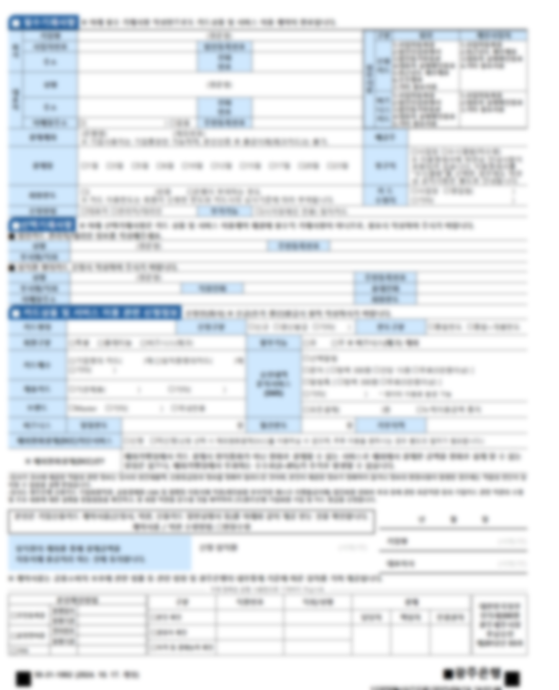
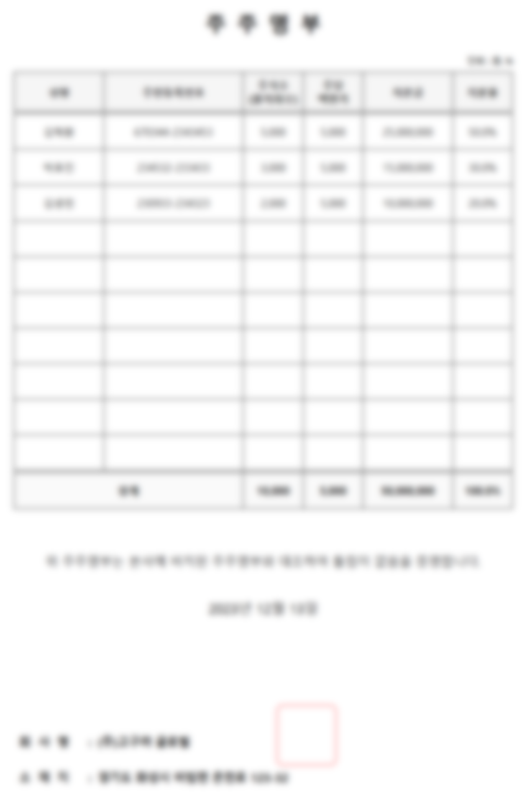
모바일/서버 환경에서 신분증·카드를 인식하는 ROI Detection 모델을 단독 개발하고, 현재 다수 금융권 고객사 서비스에 탑재되어 약 3년간 운영 중. 학습된 모델은 ONNX로 변환해 엔진 측에 전달하는 방식으로 배포되며, 신규 카드 추가·실패 케이스 대응·정확도 개선을 지속적으로 반영하는 라이브 모델입니다. 이 모델의 핵심인 다중 채널 ROI 식별 방법은 특허로 등록되어 있습니다 (10-2837662호).
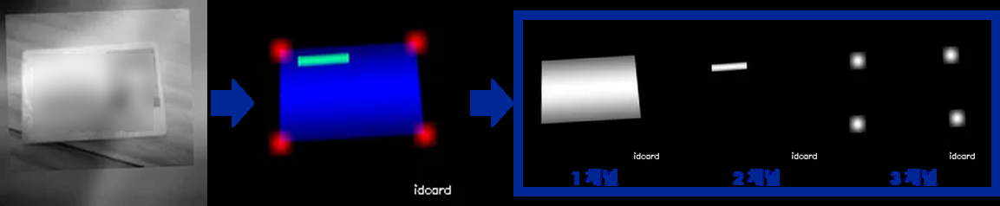
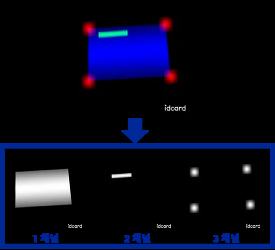
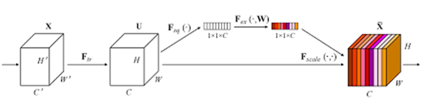
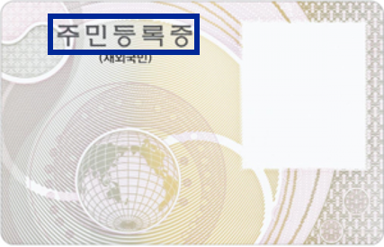
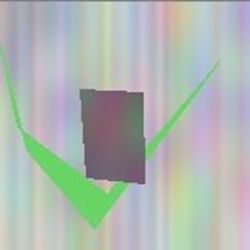
사용자 사진 3~5장으로 AI 프로필을 자동 생성하는 서비스의 핵심 생성 모델을 단독 개발하고 알파 출시까지 마쳤습니다. Stable Diffusion XL + LoRA 파인튜닝(학습 약 15분)으로 사용자 아이덴티티를 학습하고, Mean Face + Frontalization으로 입력 각도와 무관하게 정체성이 유지되도록 정규화했습니다.
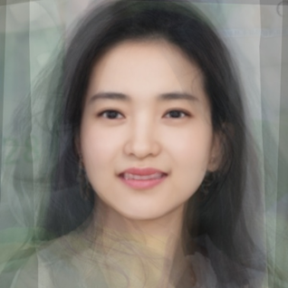
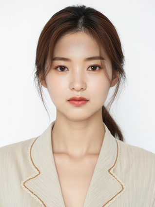
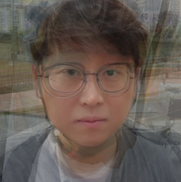
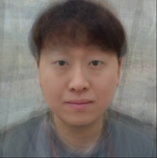
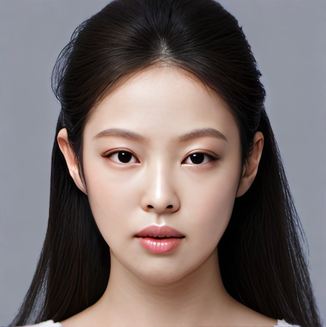
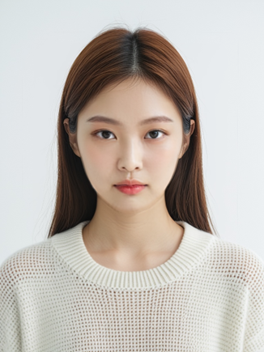
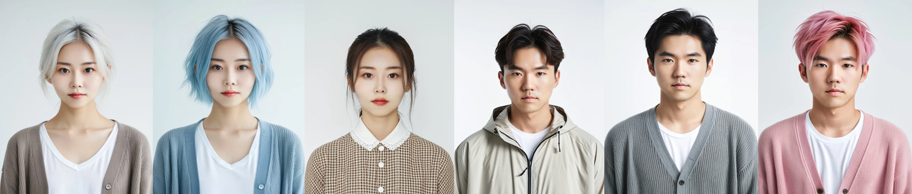